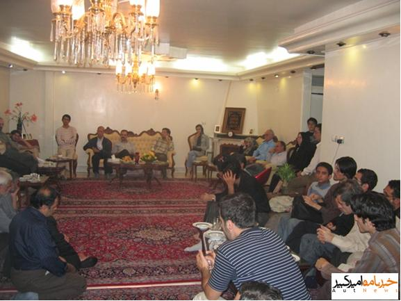

هم زمان با روز عید فطر، عصر دیروز، شنبه ۲۱ مهرماه، جمعی از فعالین دانشجویی، سیاسی، روشنفکران و… با حضور در منزل احسان منصوری، دانشجوی در بند، با خانواده وی دیدار و مراتب همدردی خود را با خانواده دانشجویان بازداشت شده ابراز کردند.
به گزارش خبرنامه امیرکبیر در این دیدار جمعی از اعضای انجمن اسلامی دانشجویان دانشگاه امیرکبیر و دیگر دانشگاه ها، اعضای شورای مرکزی دفتر تحکیم وحدت و همچنین اعضایی از سازمان دانش آموختگان، جبهه مشارکت، فعالین ملی مذهبی، فعالین کارگری و کمیته پیگیری وضعیت بازداشت شدگان خودسرانه حضور داشتند.
در ابتدای این جلسه پدر احسان منصوری گزارشی از وضعیت سه دانشجوی در بند دانشگاه امیرکبیر ارائه کرد. آقای منصوری با یادآوری این نکته که این دانشجویان در پی انتشار چند نشریه جعلی که مطالب موهنی در آن ها درج شده بود بازداشت شدند، گفت: «علیرغم تکذیب موکد و چندین باره فرزندان ما، شاهد بودیم طراحان این سناریو که قصد داشتند به هر قیمت ممکن این سناریو را آن طور که از قبل طرح ریزی کرده بودند پیش ببرند، تاکنون حاضر به این نشدند که از کار اشتباه خود دست بکشند و فرزندان بیگناه ما را آزاد کنند.» منصوری همچنین با اشاره به برگزاری دادگاه این دانشجویان در هفته های گذشته، خاطرنشان کرد: «ما معتقدیم رای این دادگاه از قبل صادر شده است و الان نزدیک به دو هفته است که در انتظار قرائت این رای توسط قاری شعبه ۶ دادگاه هستیم.»
پدر احسان منصوری با اعلام این که دانشجویان در بند چند روز است که از بند ۲۰۹ به اندرزگاه ۸ منتقل شده اند، گفت: «بند عمومی اگر چه از بعضی نظرها خوب است اما اندرزگاه ۸ جایی است که احتمال آن که افراد ناباب در آنجا حضور داشتند و برای بچه ها مزاحمت ایجاد کنند، زیاد است.» منصوری در پایان ضمن تشکر از زحمات کمیته پیگیری، احزاب، فعالین سیاسی، دفتر تحکیم وحدت و انجمن اسلامی پلی تکنیک که در این مدت در کنار خانواده دانشجویان بازداشت شده بودند، اظهار داشت: «جا دارد تشکر ویژه کنم از ۵ دانشجوی آزاد شده پلی تکنیک که از زمان آزادی با شکایت هایی که به دفتر حقوق شهروندی کرده و پیگیری هایی که داشتند، کمک بزرگی به افشا شدن حقیقت این پرونده کردند. ما، خانواده ها، بدون واهمه از تبعات پیگیری هایمان تا آن جا که از دستمان برآمده برای احقاق حقوق فرزندانمان انجام دادیم و بعد از این هم به این روند ادامه خواهیم داد، کما این که من امسال مرخصی بدون حقوق گرفته ام تا بتوانم هر چه بیشتر پیگیر وضعیت این سه دانشجو باشم.»
به گزارش خبرنامه امیرکبیر در ادامه جلسه دکتر فریبرز رئیس دانا ضمن تبریک عید فطر به همگان در سخنان کوتاهی ایستادگی و مبارزه جوانان دانشجو را در راه تحقق آزادی و عدالت ستود. رئیس دانا با اشاره به وفای به عهد دانشجویان در حمایت از دوستان در بند خود، گفت: «من به همت، روحیه و توان این جمع فارغ از شمار و تعداد آن می نگرم. راه مبارزه ما در راه آزادی و برابری بازگشت ناپذیر است و ما این مسیر را تا انتها و تا جایی که نفس داریم طی خواهیم کرد.» رئیس دانا در پایان خاطرنشان کرد: «ما منتظر احسان، احمد و مجید می مانیم. این نشست ها امیدبخش است. من جوانه های سبز را در دل این نشست ها می بینم و صدای قمری ها که آواز می خوانند را می شنوم.»
حبیب الله پیمان در ادامه با اشاره به این که جوانان و دانشجویان اجازه خاموشی مشعل صلح و دوستی که همه بزرگان مذاهب به دنبال آن هستند را نمی دهند، اظهار داشت: «به عقیده من فطر به معنای تلاش انسان برای آزادی خود از قید اسارت و بندگی خویش و دیگران است، که متاسفانه این پیام امروز از سوی حاکمیت به ضدش بدل شده است. هر کسی که از این قید رها شود دیگر از هر ترس و بیمی غیر خدا آزاد شده و آماده آفرینندگی می شود. ایستادگی و تسلیم نشدن احمد، احسان و مجید در مدت اسارت نیز به معنی رها شدن ایشان از خود و رسیدن به آزادی درونی است. داشتن چنین فرزندانی مایه افتخار است و این رنج ها در راه هدف، عامل بازدارنده ای نخواهد بود.»
پیمان ضمن اشاره به پرداخت هزینه های گزاف از سوی فعالین اجتماعی ایران بدون حصول نتیجه مطلوب، خاطرنشان ساخت: «نتیجه در کوتاه مدت و به صورت ناگهانی به دست نمی آید و تغییرات به آرامی در شرف وقوع است و این کاروان به پیش می رود.» حبیب الله پیمان در ادامه سخنان خود به تلاش حاکمان برای مایوس کردن فعالین داخلی اشاره کرد و اظهار داشت: «ما امروز در مسیری قرار داریم که به پیروزی ختم می شود و حاکمان بدانند ما که خودآگاهانه گام می زنیم، به راه خود ایمان داریم و از درون آرام و مصمم هستیم.»
در ادامه جلسه آذر منصوری، معاون سیاسی جبهه مشارکت، ضمن تقدیر از خانواده های سه دانشجوی در بند، گفت: «وجود چنین خانواده هایی که صبر و استقامت طولانی دارند مایه افتخار است و همراهی خانواده با فرزند نشان از وجود آرمانی جمعی است.» منصوری در ادامه با ابراز نگرانی در مورد وضعیت هادی قابل و پاسخگو نبودن مرجع دستگیری این فعال سیاسی، خاطرنشان کرد: «با وجود سابقه دار بودن برخورد با دانشجویان و روزنامه نگاران، بعد از یک دست شدن حاکمیت شاهد دخالت مستقیم دولت، به عنوان نماینده مردم، در برخوردها هستیم که نمونه آن سه دانشجوی پلی تکنیک است که با شکایت رئیس دانشگاه در زندان هستند.» معاون دبیرکل جبهه مشارکت در ادامه سخنان خود با ذکر این نکته که این گونه رفتارها جز ایجاد چالش و خطر نتیجه دیگری ندارد، گفت: «نوع برخورد دولت نشان می دهد که آن ها می خواهند افراد یا با آن ها همراهی کامل داشته باشند و یا این که به طور کامل حذف شوند.»
به گزارش خبرنامه امیرکبیر محمد هاشمی، دبیر تشکیلات دفتر تحکیم وحدت، نیز طی سخنان کوتاهی با اشاره به سابقه برخورد با دانشجویان گفت: «این اولین بار نیست که با دانشجویان برخورد می کنند، و احسان، مجید و احمد هم آخرین آن ها نخواهند بود. هزینه زیادی بر دانشجویان تحمیل شده، اما خوشحالیم که اگر کسی در زندان هزینه می دهد، مانند گذشته در بیرون تنها نیست و از دو جبهه، بازجوها در داخل زندان و رقبا در خارج زندان، مورد هجمه قرار نمی گیرد.» هاشمی مهم ترین اثر این گونه جلسات را ایجاد انگیزه و امید در افرادی که در حال فعالیت هستند دانست و اظهار داشت: «شاید این جلسه تاثیر مستقیمی در رای دادگاهی که تبعا از قبل صادر شده، نداشته باشد اما به دانشجویان در بند امید می دهد و باعث می شود که آن ها احساس کنند که تنها نیستند.»
در ادامه جلسه، عباس حکیم زاده، عضو سابق شورای مرکزی انجمن اسلامی امیرکبیر و یکی از دانشجویان آزاد شده این دانشگاه، ضمن اشاره به هزینه بسیار زیادی که سه دانشجوی در بند دانشگاه امیرکبیر در این مدت متحمل شدند، اظهار داشت: «فشار و شکنجه ای که متوجه دانشجویانی که متوسط سنی آن ها ۲۰ سال و سابقه فعالیتشان ۲-۳ سال است، شد بسیار سنگین بود. به طوری که هیچ یک از فعالین سیاسی که طی ۱۰ سال اخیر تجربه بازداشت را داشتند شاهد چنین رفتارهایی نبودند». این دانشجوی آزاد شده دانشگاه امیرکبیر با گلایه از احزاب و اصحاب رسانه که حمایت های خود را از دانشجویان بسیار کمرنگ کرده اند، گفت: «در سالیان اخیر دانشجویان همواره سنگ زیرین آسیا بوده اند و از حقوق اساسی همه افراد و نیروها، فارغ از عقیده و گرایش سیاسی شان دفاع کرده اند. اما اکنون شاهدیم در زمانی که دانشجویان نیاز مبرمی به حمایت دارند از سوی جراید و نیروهای سیاسی تنها گذاشته می شوند.»
به گزارش خبرنامه امیرکبیر حکیم زاده در ادامه با اشاره به فعالیت هایی که ۵ دانشجوی پلی تکنیک پس از آزادی برای احقاق حقوق خود و آزادی دوستانشان انجام داده اند، خاطرنشان کرد: «ما هر دری که به ذهنمان می رسید زدیم. از مقامات مسئول در قوه قضاییه تا سران احزاب و تشکل هایی مانند کمیسیون حقوق بشر اسلامی و کانون مدافعان حقوق بشر و… . ما ترجیح دادیم قضیه را در سکوت پیش ببریم تا برای مقامات قوه قضاییه شائبه سیاسی بودن انگیزه پیگیری های ما پیش نیاید. اما تا به امروز تلاش این افراد نتیجه موثری در وضعیت دوستان در بند ما نداشته است. لذا همان طور که در نامه ای که دو هفته پیش به رئیس دادگستری نوشتیم، اگر قرار باشد به سبب رای دادگاه، دوستان ما، با وجود همه شکنجه ها و فشارهایی که متحمل شدند، همچنان در زندان بمانند، وظیفه اخلاقی ما ۵ نفر ایجاب می کند ناگفته هایی را علنی کنیم. اگر چه ممکن است این کار بار دیگر هزینه هایی را برای ما به بار آورد، اما بدون شک آن که بسیار بیشتر از ما هزینه خواهد داد حاکمیت خواهد بود.»
مهدی امینی زاده، عضو دفتر ادوار تحکیم، دیگر سخنران این جلسه ضمن «سناریوی از پیش طراحی شده» خواندن موضوع دانشگاه امیرکبیر، گفت: «این سناریو قصد حذف کلیت جنبش دانشجویی را داشت که با تلاش دوستان ما خوشبختانه شکست خورد. معلوم نیست با وجود آشکار شدن شکنجه دانشجویان برای افکار عمومی و همچنین برگزاری دادگاه این سه دانشجو، در حالی که دیگر به لحاظ قانونی موجبی برای تداوم بازداشت آن ها وجود ندارد، همچنان آن ها را در بازداشت نگه داشته اند.» امینی زاده با اشاره به تداوم روند بازداشت ها طی دو سه ماه اخیر، اظهار داشت: «الان خبردار شدیم که یاسر گلی، از فعالین دانشجویی، در کردستان به طرز نامناسبی بازداشت شده است. آقای اسانلو به خاطر درخواست جهت داشتن سندیکا ماه هاست در بازداشت به سر می برد. پس از دستگیری اعضای دفتر تحکیم به دفتر ادوار، که یک حزب قانونی است هم با شلیک گلوله حمله کردند، اعضایش را دستگیر کردند و دفتر را هم پلمب کردند. که امیدوارم هر چه زودتر این دفتر هر چه زودتر بازگشایی شود».
معاون دبیرکل سازمان دانش آموختگان با اشاره به تشکیل کمیته پیگیری وضعیت بازداشت شدگان، گفت: «این بازداشت ها علیرغم تمام مصیبت هایش، حسن و دستاوردی که داشت این بود که تمام جریان های مستقل سیاسی و فکری را حول حقوق بشر دور هم جمع کرد. ما همه قربانی اقدامات سرکوب گرانه و نقض حقوق بشر هستیم که آخرین مورد آن آقای هادی قابل بود که امیدوارم هر چه زودتر از زندان آزاد شود. ما باید با فعالیت هایمان نگذاریم جریان اقتدارگرا که به جز ثروت و قدرت به چیز دیگری پایبند نیست به هدفش برسد».
در ادامه این جلسه سعید مدنی، عضو کمیته پیگیری بازداشت شدگان خودسرانه، با اشاره به خوشبینی قبلی خود مبنی بر این که تصور می کرد دانشجویان در بند، عید فطر کنار خانواده هایشان هستند، اظهار داشت: «امید داشتم بی شرمی که این مدت شاهدش بودیم به خاطر عید تمام شود. با توجه به پایان رسیدن دادگاه این دانشجویان در مقطعی بودند که باید با تبدیل قرار آزاد می شدند. اما متاسفانه رفتارهای زشت با این دانشجویان و نقض حقوق شهروندی آن ها همچنان ادامه دارد». مدنی به سیر تشکیل کمیته پیگیری بازداشت شدگان پرداخت، و اظهار داشت: «تجربه یک سال اخیر در بازداشت فعالین سیاسی و فعالیت افراد بیرون از زندان به توافق نانوشته ای تبدیل شد. ایستادن بر سر حقوق شهروندی و دفاع از حقوق بشر زندانیان سیاسی مورد توافق اکثریت فعالین سیاسی قرار گرفت و کمیته ای که موثرترین فرد آن آقای باقی بودند تشکیل شد.»
به گزارش خبرنامه امیرکبیر سعید مدنی در ادامه ضمن ابراز امیدواری مبنی بر این که روزی این کمیته به سبب نداشتن دستور کار، خود به خود تعطیل شود، خاطرنشان کرد: «با گزارش هایی که اخیرا به دست ما رسیده ظاهرا این کمیته همیشه از دستور کارش عقب خواهد بود. امیدوارم فعالیت های این کمیته تاثیر بسزایی در آزادی سریع فعالانی که غیرقانونی بازداشت می شوند، داشته باشد. اعضای این کمیته مصرند که به فعالیت های خودشان ادامه دهند. لذا قرار بعدی ما منزل آقای اسانلو و دیدار با خانواده ایشان است که روز ۱۱ آبان انجام خواهد شد.»

نریمان مصطفوی، عضو شورای مرکزی انجمن اسلامی امیرکبیر، در ادامه این برنامه با اشاره به علت اصلی بازداشت دانشجویان، اظهار داشت: «علت اصلی بازداشت دانشجویان حس انتقام جویی بود که در میان دولتمردان دولت نهم است. چرا که این دولت اساسش بر فریب مردم است. پس از حضور احمدی نژاد در دانشگاه امیرکبیر ماسک آزادی خواهی و عدالت طلبی مجموعه دولت نهم پاره شد و همه انتظار برخورد با مسببان رسوایی دولت نهم را می کشیدند.» این عضو شورای مرکزی انجمن پلی تکنیک، به حاکم شدن فضای اختناق از زمان روی کار آمدن دولت نهم و شکسته شدن این فضا در دانشگاه ها اشاره کرد و گفت: «چگونه ممکن است کسانی که عضو انجمن اسلامی هستند در نشریات خود به مقدسات اسلامی توهین کنند؟! کسی که برای رسیدن به آزادی و برقراری دموکراسی و فضای دیالوگ تلاش می کند، چگونه ممکن است سلاح توهین را برگزیند؟!»
مصطفوی در ادامه به علت آزاد نشدن سه دانشجوی در بند دانشگاه امیرکبیر پرداخت و اظهار داشت: «شکنجه شدن و در بند ماندن این دانشجویان به خاطر آن است که این افراد درس عبرتی برای همگان بشوند و همه عاقبت نقد سیاست های نادرست دولت را بدانند. اما تجمع هفته گذشته در دانشگاه تهران نشان داد این سیاست ناموفق بوده است. بنده بایستی گلایه کنم از کسانی که داعیه اصلاح طلبی و دفاع از حقوق بشر را داشته و از قضا خود قربانی سیاست های دولت اند، اما با موضع گیری نادرست خود بعد از حضور احمدی نژاد در دانشگاه امیرکبیر به نوعی در خصوص سرکوب دانشجویان به دولت چراغ سبز نشان دادند. در پایان لازم است از ابولفضل جهاندار و سعید درخشندی، دو فعال سابق دانشجویی، که بیش از یک سال است که به خاطر هیچ و پوچ در زندان به سر می برند هم یاد کنم».
در پایان این برنامه که با تلاش کمیته پیگیری وضعیت بازداشت شدگان خودسرانه برگزار شده بود، مادر احسان منصوری ضمن تشکر از همکاری و همراهی تمامی افراد با خانواده دانشجویان بازداشت شده، گفت: «تنها امیدواریم هر چه سریع تر بچه ها آزاد شوند. ما امروز احساس می کنیم باز هم آقای هاشمی شاهرودی، رئیس قوه قضاییه، به کمک رئیس دادگستری، آقای آوایی، این گرفتاری را حل خواهند کرد».